to Perth, Australia!
Traveled to Perth, Western Australia on 11/11/25
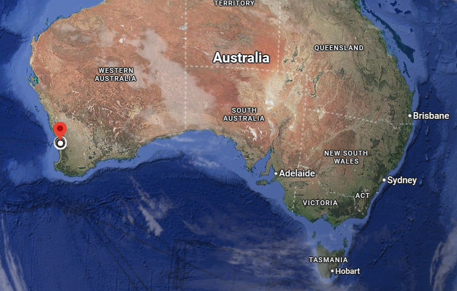
Side note: Picked up a Liter DiSarronno bottle at the Airport Duty-Free. No-one in Southeast Asia has ever heard of DiSarronno, so when I asked for it... I was missing it. Taxes for hard liquor in Australia is steep, so other than this bottle, it'll be wine and beer in Australia!
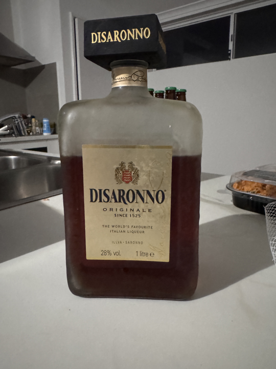

Link to:The True Size. How big are other countries compared to...?
Visited the local (Biggest mall in Western Australia) the Westfield Carousel.
Shared a Lamb & Spinach Gozleme.
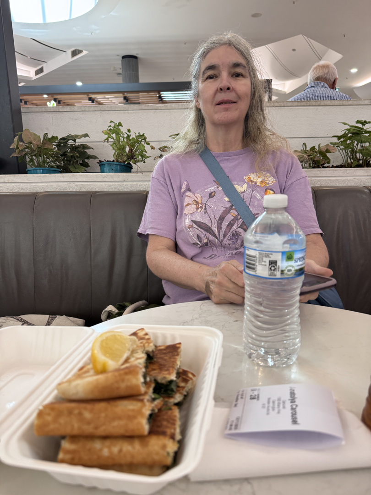
There's a K-Mart, Target, and Woolworths there! We got groceries (other than breakfasty stuff, the first time we bought 'groceries' all this trip!) of bread, potatoes, yogurt, drinks, Peanut Butter, Jelly, etc to actually make meals with!
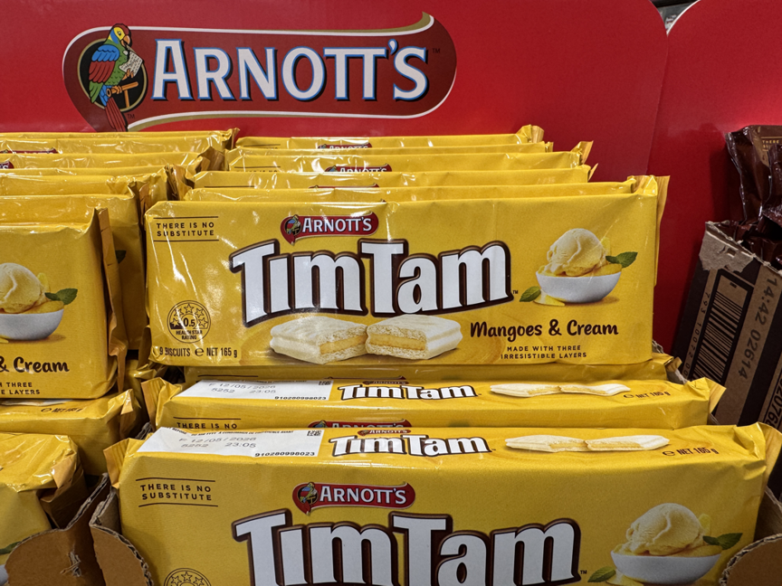
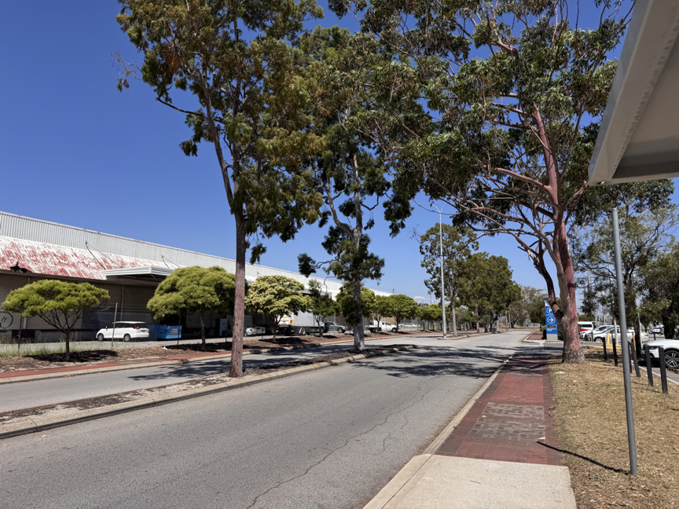
Walking through Downtown Perth, found the Museum of Western Australia had a Special Exhibit of
the Terracotta Warriors from China! This is the only exhibit outside of China, not a roaming one, and it's
only June to next February.
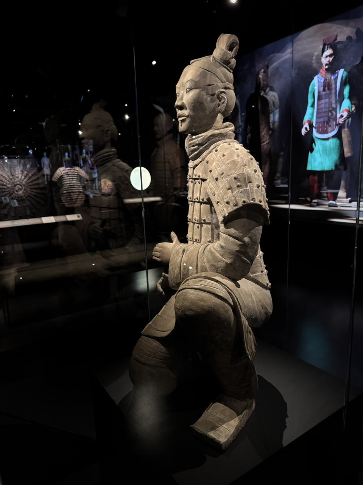
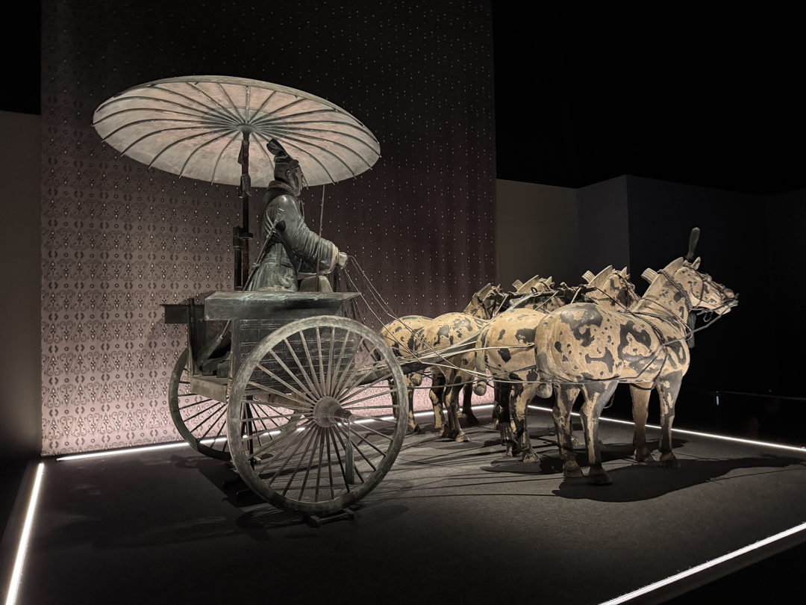
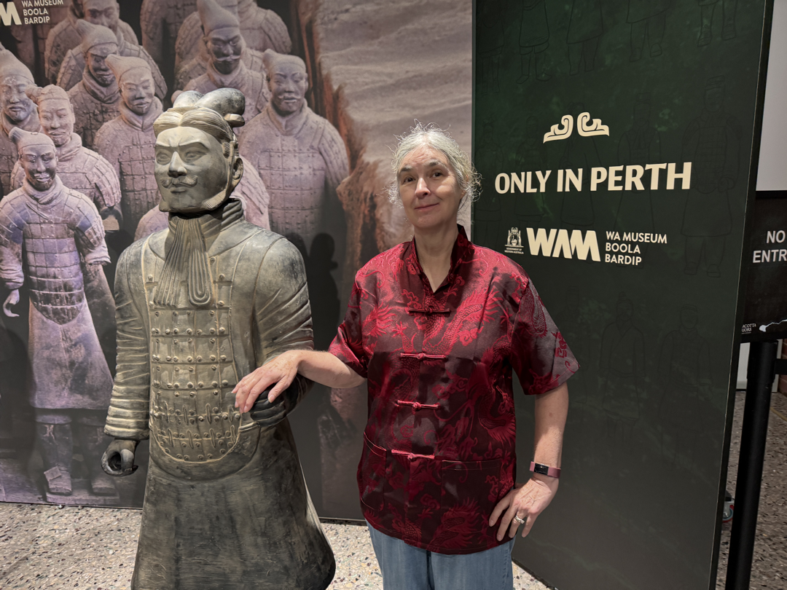
Link to:Tomb with no pyramid Introduction to the Exhibit.
Saturday we met up with the local SCA group, the Barony of Aneala!at their Arts & Sciences & Fencing meet-up. Nice folk!
Sunday we visited the Yanchep National Park, near where we're Couchsurfing:
and saw Kangaroos!
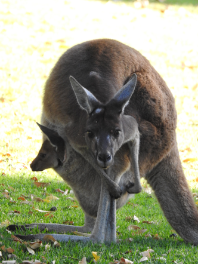
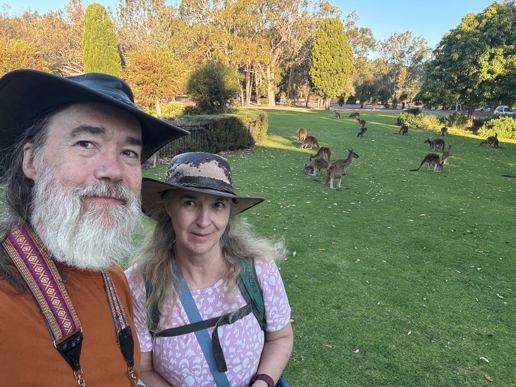
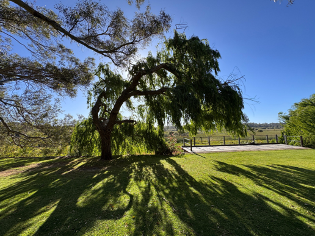
We spotted sleeping Koalas, but no great photos to show. We'll get some later.
Sunset from the boat launch by the Narrows bridge, and a view of Winthrop Hall on the University of Western Australia campus (Thanks Leonie!)
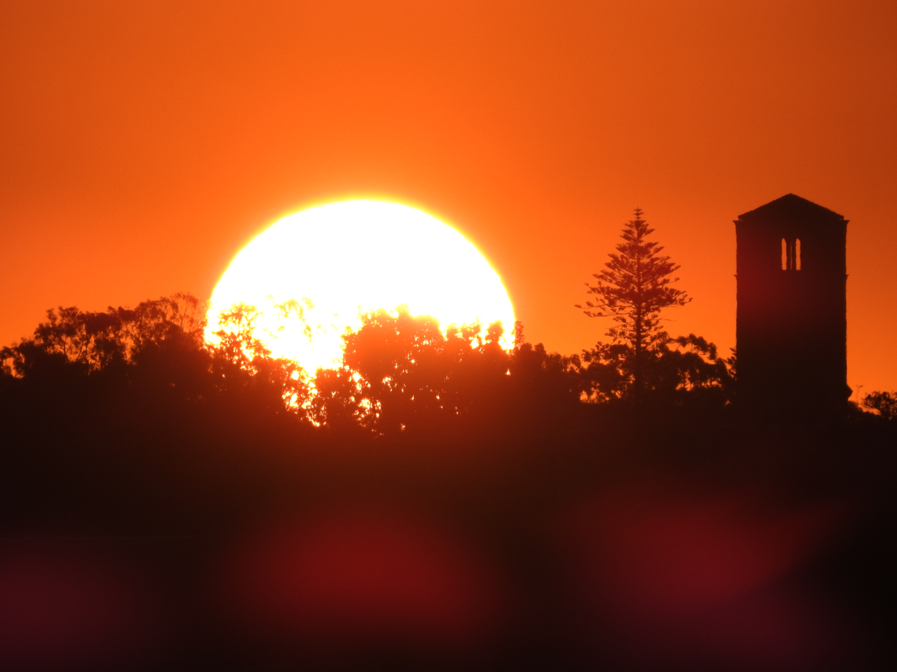
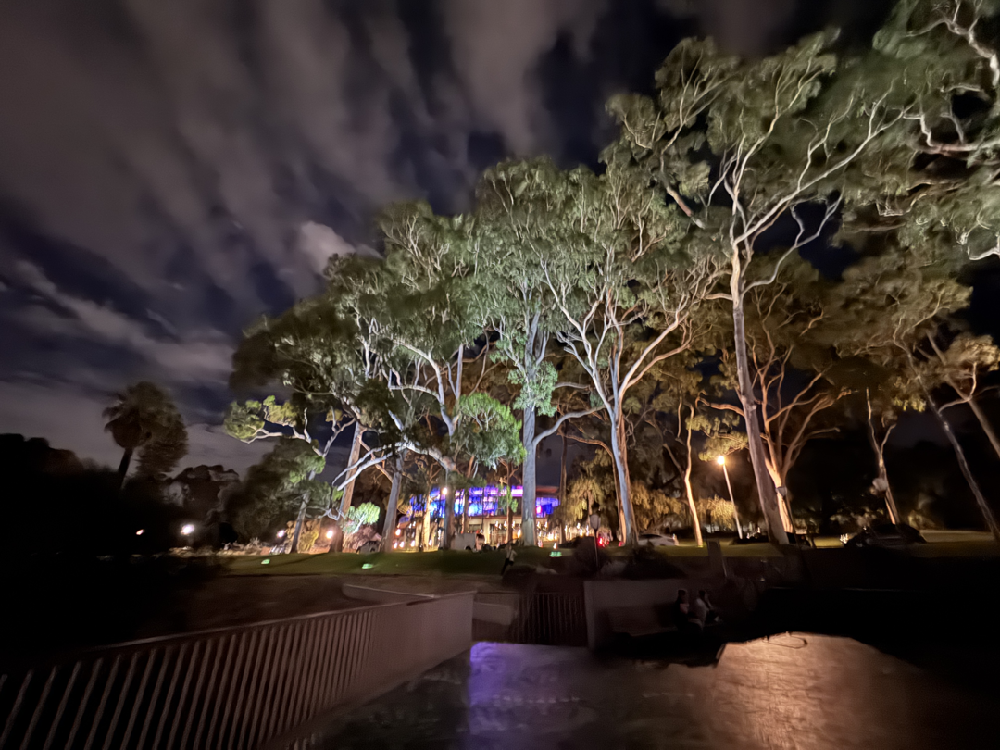
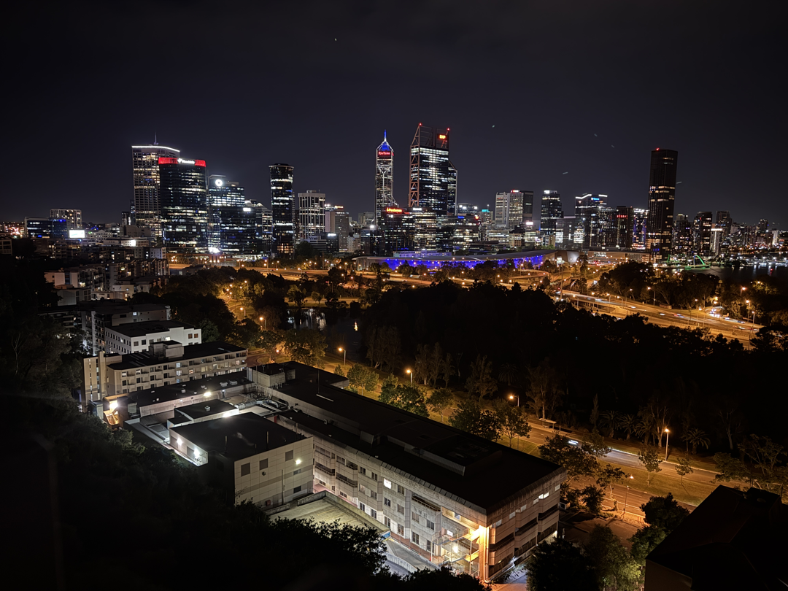
Lareena replaced her sorely worn Australia hat with a new leather one!
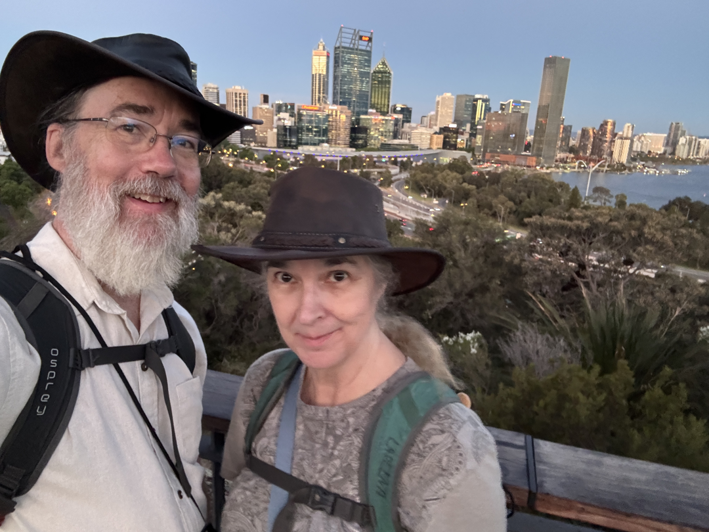
Our trip _should_ slow down about now. Lots of things to do in Australia, but we're taking it much slower, and so major items may be days between. Will always update the calendar on the main 2025-26 travel page daily.
THEN on November 21, we head to Hobart, Tasmania, Australia!

Then Queensland and New South Wales and Victorial and South Australia Coastal places.
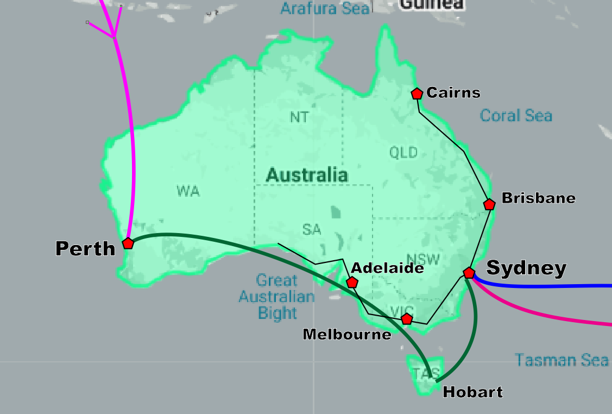